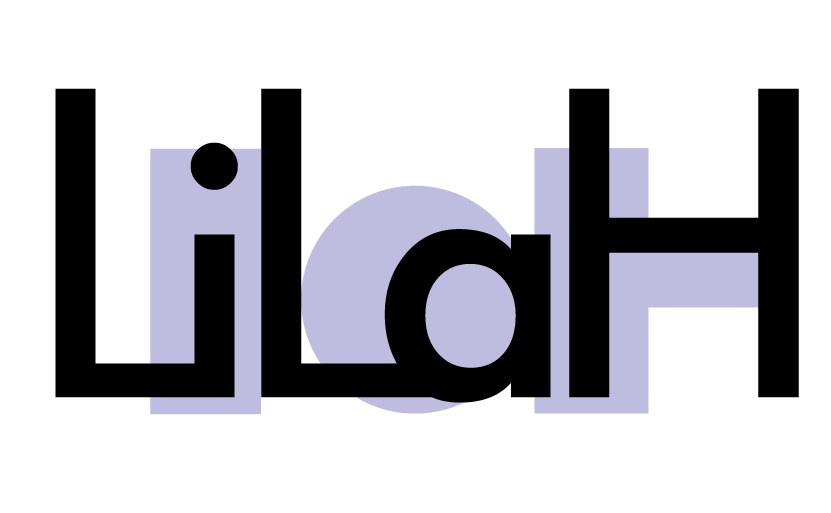

LiLaH (The Linguistic Landscape of Hate Speech in Social Media) is an FWO (Flemish NSF) and SSF (Slovenian Sciene Foundation) funded project focusing on building systems that can automatically recognize and analyse hate speech in social media texts. We are interested in the linguistic properties of the language that is being used to express hate in social media, specifically hate against migrants and LGBT people, and in automatically detecting it. The languages addressed are English, Dutch, Slovene, Croatian and French.
The project is a cooperation with The Centre for Computational Linguistics and Psycholinguistics (CLiPS) (University of Antwerp, Belgium), The Department of Translation (University of Ljubljana, Slovenia) and The Department of Knowledge Technologies (Jozef Stefan Institute, Slovenia)
The project ARRS N6-0099: "The linguistic landscape of hate speech on social media", 2019 – 2023
N. Ljubešić, D. Fišer and T. Erjavec (2019). The FRENK Datasets of Socially Unacceptable Discourse in Slovene and English. arXiv preprint arXiv:1906.02045.
T. De Smedt, S. Jaki, E. Kotzé, L. Saoud, M. Gwóźdź, G. De Pauw, and W. Daelemans. (2018). Multilingual Cross-domain Perspectives on Online Hate Speech.
P. Fortuna and S. Nunes. (2018). A survey of automatic detection of hate speech in text. ACM Computing Surveys, Vol 51, 4, article 85.